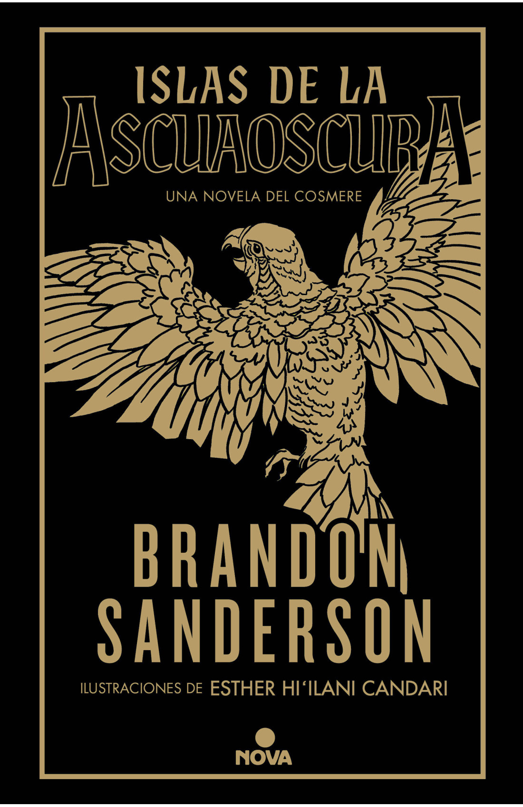
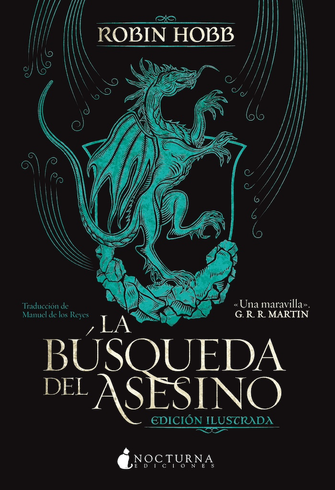
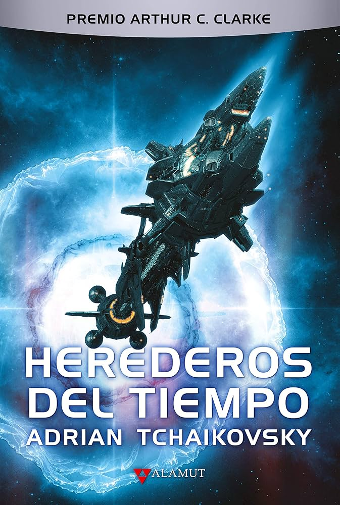
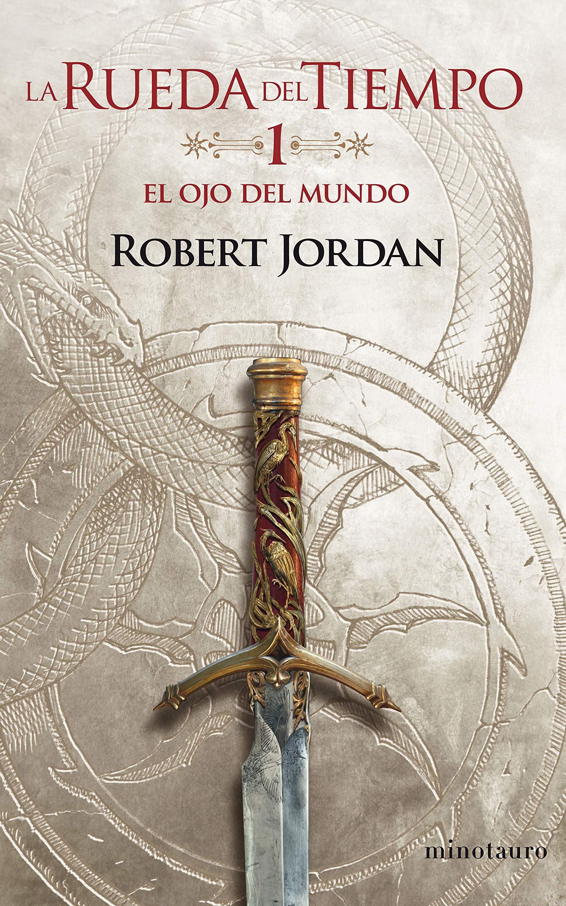

Es el libro de Brandon que más he disfrutado desde seguramente El Ritmo de la Guerra. Me encanta Ocaso y como parece que todo vuelve un poco a sus inicios, cuando el Cosmere era más sencillo. Ha sido como reencontrarme con el Brandon que más me gusta y eso siempre es bien.
Toda la trama de Astrífera me gusta mucho también y deja conceptos importantes a nivel de Cosmere que serán importantes para entender lo que se viene. Ojalá tendiera más a este tipo de historias, pero es evidente que el Cosmere que plantea Brandon va por otros derroteros. Aún así, espero que siempre tenga hueco para este tipo de historias. Ocaso te quiero.
De vez en cuando, entre libros enormes, sagas de fantasía gigantes, ciencia ficción enrevesada... Me gusta leer un buen thriller. Les suelo pedir poco: que me evada de conceptos y worldbuilding inmensos y me traiga la típica historia policiaca intentando atrapar a un asesino. Pues grata sorpresa: me ha gustado mucho. Sin duda, es de los thrillers que más me han gustado de los últimos que habré leído, sobretodo por los flashbacks del diario y por la profundidad que trata de darle a las motivaciones del asesino. Sin duda, toda su trama se roba la historia. Que bien entran este tipo de historias de vez en cuando, y más si está bien hecha.

El cierre de la trilogía del Vatídico me parece sublime y en la línea de los otros 2 libros que leí de la autora. El grado de introspección en este libro es alto y el desarrollo de sus personajes a mí me parece lo más realista que he tenido el gusto de leer en un libro. El desarrollo de Traspié aquí puede desesperar a más de uno pero párate a pensar en lo que ha pasado con él a lo largo de su vida, ¿Acaso tú actuarías diferente? Desde fuera es muy sencillo valorar que bien o mal actúa pero para mí lo dificil de escribir a un personaje es que tome decisiones que se sientan reales, no que satisfaga lo que presupones que debe hacer. Y en estos términos, en esta liga, Robin Hobb es dueña y señora. Bueno y el sistema mágico a mí me maravilla. La Maña me parece una idea tremenda y que se amolda perfectamente al estilo de desarrollo de la historia que plantea Hobb. Y Ojos de Noche. Ya está, no digo más. En fin, deseando seguir leyendo este universo y seguir disfrutando a una de mis autoras favoritas, sin duda alguna.

Es el primer libro que leo de Adrian Tchaikovsky y mi primera impresión es que me gusta... pero hasta ahí. Los primeros dos tercios del libro son irregulares, con tramos de narración que se hacen pesados con la esperanza de que lo que cuenta, que al final es de lo que va el libro, suene interesante e innovador. En algunos temas si que me ha parecido interesante lo que plantea, pero en otras ideas no, por lo que no ha terminado de convencerme. La trama del planeta de Kern me parece por mucho la más interesante de las dos, con un planteamiento bastante divertido. La trama de la Gilgamesh me ha parecido más aburrida. Muchas vueltas a lo mismo y un mensaje que queda claro cuando lo repites 2 o 3 veces, sin ser necesario repertirlo hasta la saciedad. El último tercio del libro me ha gustado bastante más y cierra el libro bastante bien y con ganas de leer su continuación que, eso sí, no va a suceder pronto.

En proceso de lectura.